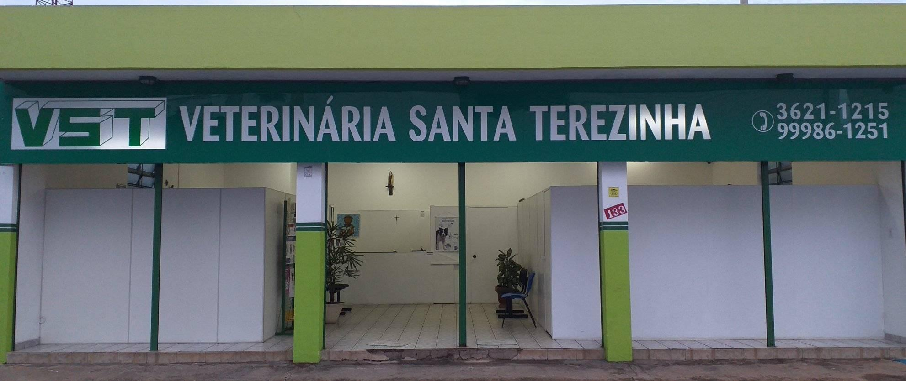
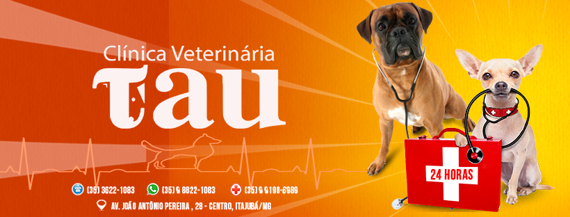
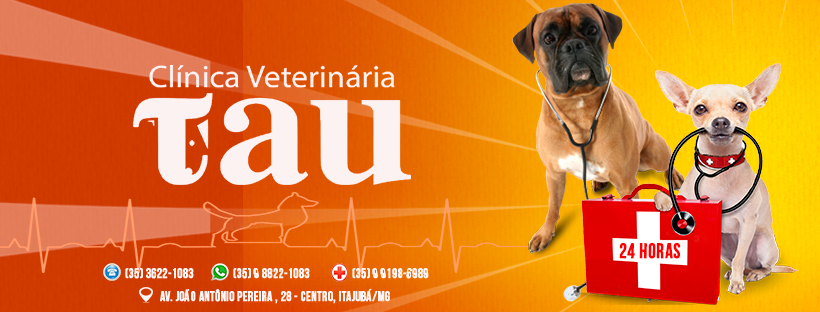

- Home
- >
- Veterinários parceiros
Veterinária Santa Terezinha
Clínica veterinária de Itajubá focada em tratamento e cirurgias, a VST nos deu muito apoio com consultas gratuitas e medicamentos a preço de custo.
Telefone: (35) 3621-1215
Endereço: R. Eduardo Piquete, 133 - São Vicente
Veteriária Tau

Veteriária Tau
Veterinária 24h, esteve presente desde o início no projeto, ajudando desde o começo com o tratamento dos gatos resgatados.